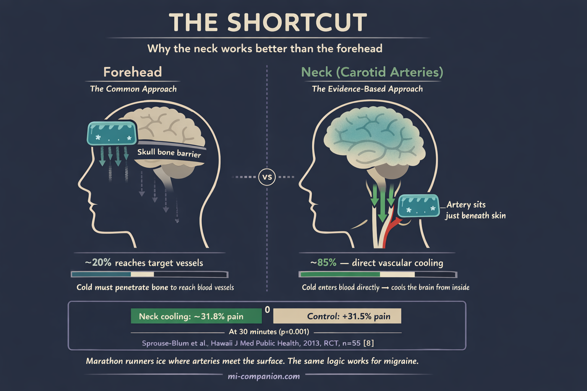

By Rustam Iuldashov
30 years lived experience with chronic migraine | Sources: 22 peer-reviewed references including Journal of Clinical Nursing (meta-analysis, n=224), Hawaii Journal of Medicine & Public Health (RCT, n=55), Headache (TRPM8 review) | Last updated: March 10, 2026
Medical Review: This content is based on peer-reviewed research from Journal of Clinical Nursing, Hawaii Journal of Medicine & Public Health, Science, Headache, Scientific Reports, International Journal of Clinical Practice, Frontiers in Neurology, Agri, Experimental Physiology, and Current Biology.
Important Notice: This article is for informational purposes only and does not replace professional medical advice. The author is not a licensed physician or healthcare professional. Always consult your doctor before making changes to your treatment plan.
Key Takeaways
- Cold therapy has the strongest research support for acute migraine pain relief — especially when applied to the carotid arteries at the neck, not just the forehead[2][8]
- Cold works through three mechanisms: vasoconstriction, nerve signal slowing via the gate control theory, and activation of TRPM8 cold-receptor channels[3][4][5]
- Heat therapy addresses muscular tension — a major but often overlooked component of migraine attacks[9][11]
- Both heat and cold significantly reduce migraine pain compared to no treatment[11]
- Menthol products offer a TRPM8-activating, portable alternative when ice isn’t available[7][12]
- The most effective approach is often both: cold on the neck for vascular pain, heat on the shoulders for muscular tension[2][8][11]
Twenty minutes into an attack. The light stabs. The sound hammers. You stumble toward the freezer — or the heating pad. But which one actually helps?
Both can. But they work through different mechanisms, on different targets, in different places on your body. Understanding why each one works transforms temperature therapy from a lucky guess into a deliberate strategy — one you can tailor to your migraine.
Why Cold Works: Far More Than Numbing
Cold therapy for migraine predates modern medicine. In 1849, James Arnott published the first clinical account of applying salt-and-ice mixtures to the head for headache relief.[1] Over 170 years later, science has finally caught up to what patients have known all along.
A 2023 meta-analysis in the Journal of Clinical Nursing pooled six studies — four randomized controlled trials and two non-RCTs — evaluating cold interventions including gel headbands, gel caps, and cold wraps.[2] The result: cold produced a significant short-term reduction in migraine pain within 30 minutes (standardized mean difference −3.21; 95% CI: −5.94 to −0.48).[2] To put that in context, that effect size rivals some over-the-counter painkillers.
But the real story is how cold works. It does at least three things simultaneously — and the third one might surprise you.
It constricts blood vessels. During an attack, vessels in and around the brain dilate as part of the neuroinflammatory cascade. Cold reverses this. Vasoconstriction narrows those vessels, dialing down the throbbing, pulsating quality of migraine pain.[3]
It slows nerve signals. Cold physically reduces nerve conduction velocity. This aligns with the gate control theory of pain, proposed by Melzack and Wall in 1965[4] — one of the most influential models in pain science. The theory suggests that non-painful input (the sensation of cold) can “close the gate” on pain signals traveling to the brain. The cold sensation races ahead. The pain signal arrives at a closed door.[4]
It activates TRPM8 — your brain’s cold receptor. TRPM8 is a temperature-sensitive ion channel expressed on sensory neurons, including those in the trigeminal nerve — migraine’s primary pain highway.[5] Multiple genome-wide association studies have linked genetic variations in the TRPM8 gene to reduced migraine risk.[6] Some people are born with less TRPM8 activity. They get fewer migraines. And they feel cold less intensely.[6]
Cooling agents like menthol activate these same TRPM8 channels. A 2010 randomized, triple-blind, crossover study found that 10% menthol solution applied to the forehead and temples significantly reduced migraine pain compared to placebo.[7] Cold therapy may be tapping into the exact molecular pathway that protects certain people from migraine in the first place.
Forget the Forehead. Target the Neck.
Most people press an ice pack against their foreheads. It feels intuitive — that’s where it hurts. But the forehead may not be the most effective location.
Think about it this way: marathon runners don’t ice their muscles. They ice their armpits and groins — wherever major blood vessels sit closest to the skin surface. A 2013 randomized controlled trial applied this same logic to migraine.[8]
Sprouse-Blum and colleagues tested a frozen neck wrap positioned over the carotid arteries. At the 30-minute mark, the treatment group experienced a 31.8% decrease in pain. The control group? A 31.5% increase (p<0.001).[8]
The proposed mechanism is elegant: by cooling the carotid arteries directly, you cool the blood flowing to the brain — far more efficiently than cold applied over the skull, which must penetrate bone to reach the target vessels. The neck is your shortcut.

Heat: The Other Half of the Equation
If cold constricts vessels and slows nerves, wouldn’t heat — which does the opposite — make things worse?
Not necessarily. Heat works through a completely different mechanism, targeting a completely different problem.
Warmth promotes vasodilation, improving blood circulation and relaxing tight, spasming muscles.[9] This matters because muscle tension in the neck and shoulders isn’t just a side effect of migraine — it’s deeply woven into the attack itself. Some migraine patients report more neck pain than nausea.[10] Tight cervical muscles can trigger attacks. Attacks can tighten cervical muscles. It’s a vicious feedback loop.
A 2021 randomized controlled trial tested both approaches head-to-head. Seventy-five cardiac patients experiencing nitrate-induced migraine-type headaches were randomized into three groups: heat therapy, cold therapy, and control. Both heat and cold significantly reduced pain compared to doing nothing (p<0.001). Neither proved clearly superior to the other.[11]
The takeaway isn’t that heat equals cold. It’s that they solve different pieces of the same puzzle. Cold addresses the neuroinflammatory, vascular pain — the throbbing. Heat addresses the muscular tension that accompanies, amplifies, and sometimes triggers it.
⚠️ When to Seek Emergency Help
If you experience a sudden, severe headache unlike anything you’ve felt before — sometimes described as a “thunderclap” headache — seek emergency medical attention immediately. This could indicate a serious condition such as a subarachnoid hemorrhage or meningitis.
Temperature therapy is for managing diagnosed migraine, not for evaluating new or unusual head pain. If you are experiencing the worst headache of your life, call your local emergency number immediately. Do not use this article to self-diagnose.
The Combined Strategy: Cold Above, Warmth Below
After 30 years with migraine, I’ve learned that the best answer to “ice or heat?” is often “both — in the right places.”
Your Temperature Therapy Playbook
Cold on the neck, early. Within the first 15–20 minutes of an attack, apply a cold pack over the carotid arteries — the sides of your neck, just below the jaw. Wrap the gel pack in a thin cloth. This targets the vascular and neuroinflammatory components directly.[2][8]
Heat on the shoulders and upper back. Apply a warm pad simultaneously, or once the worst throbbing begins to ease. This loosens the muscular tension that can prolong the attack by hours.[9][11]
Menthol as a portable bridge. A topical menthol gel or peppermint oil applied to the temples activates TRPM8 channels — delivering the neurological benefits of cold without needing a freezer. Particularly useful when you’re at work, traveling, or simply don’t have ice.[7][12]
Keep it to 15–20 minutes per session. A cycle of 10 minutes on, 10 minutes off maintains the analgesic effect while protecting your skin from cold injury.[13] Never apply ice directly to bare skin.
⚕️ Important Medical Disclaimer
This article is for informational and educational purposes only and does not constitute medical advice, diagnosis, or treatment. The author, Rustam Iuldashov, is not a licensed physician, neurologist, or healthcare professional. He is a patient advocate with 30 years of personal experience living with chronic migraine.
All clinical claims in this article are sourced from peer-reviewed research published in indexed medical journals. Study designs and sample sizes are noted where applicable.
Always consult a qualified healthcare provider for questions about your individual health, migraine treatment, or medication decisions.
Temperature therapy should complement, not replace, your prescribed migraine treatment plan. If you experience changes in your migraine pattern, new neurological symptoms, or headaches that do not respond to your usual treatment, contact your healthcare provider promptly. This content was last reviewed for accuracy on March 10, 2026.
References
- Arnott J. “Practical Illustrations of the Treatment of the Principal Varieties of Headache by the Local Application of Benumbing Cold.” London (1849). Historical text.
- Hsu YY, Chen CJ, Wu SH, Chen KH. “Cold intervention for relieving migraine symptoms: A systematic review and meta-analysis.” Journal of Clinical Nursing, 32(11-12):2455–2465 (2023). doi:10.1111/jocn.16368. Study design: Systematic review / Meta-analysis. n=224 (6 studies).
- Swenson C, Sward L, Karlsson J. “Cryotherapy in sports medicine.” Scandinavian Journal of Medicine & Science in Sports, 6:193–200 (1996). doi:10.1111/j.1600-0838.1996.tb00090.x. Study design: Review.
- Melzack R, Wall PD. “Pain mechanisms: A new theory.” Science, 150(3699):971–979 (1965). doi:10.1126/science.150.3699.971. Study design: Theoretical framework.
- Dussor G, Cao YQ. “TRPM8 and Migraine.” Headache, 56(9):1406–1417 (2016). doi:10.1111/head.12948. Study design: Review.
- Key FM, Abdul-Aziz MA, Mundry R, et al. “Reduced TRPM8 expression underpins reduced migraine risk and attenuated cold pain sensation in humans.” Scientific Reports, 9:19655 (2019). doi:10.1038/s41598-019-56295-0. Study design: Cross-sectional / Genetic. n=38.
- Borhani Haghighi A, Motazedian S, Rezaii R, et al. “Cutaneous application of menthol 10% solution as an abortive treatment of migraine without aura: a randomised, double-blind, placebo-controlled, crossed-over study.” International Journal of Clinical Practice, 64(4):451–456 (2010). doi:10.1111/j.1742-1241.2009.02215.x. Study design: RCT (crossover). n=35.
- Sprouse-Blum AS, Gabriel AK, Brown JP, Yee MH. “Randomized controlled trial: Targeted neck cooling in the treatment of the migraine patient.” Hawaii Journal of Medicine & Public Health, 72(7):237–241 (2013). PMID:23901394. Study design: RCT (crossover). n=55.
- Association of Migraine Disorders. “Ice and Heat for Migraine: How Temperature Therapy Works.” Spotlight on Migraine Podcast, Season 7, Episode 9 (2026). Expert interview with Dr. Alicia Duyvejonck, NP, headache specialist.
- Calhoun AH, Ford S, Millen C, et al. “The prevalence of neck pain in migraine.” Headache, 50(8):1273–1277 (2010). doi:10.1111/j.1526-4610.2009.01608.x. Study design: Cross-sectional. n=113.
- Bagherzadi A, Emani R, Ghavami H, Khalkhali HR, Ebrahimi M. “Comparing the effect of heat and cold therapy on the intensity of nitrate induced migraine type headache in cardiac inpatients: A randomized controlled trial.” Agri, 33(3):148–154 (2021). doi:10.14744/agri.2020.00907. Study design: RCT. n=75.
- St. Cyr A, Chen A, Bradley KC, et al. “Efficacy and tolerability of STOPAIN for a migraine attack.” Frontiers in Neurology, 6:11 (2015). doi:10.3389/fneur.2015.00011. Study design: Open-label pilot. n=25.
- Mutlu S, Yilmaz E. “The effect of soft tissue injury cold application duration on symptoms, edema, joint mobility, and patient satisfaction: A randomized controlled trial.” Journal of Emergency Nursing, 46(4):449–459 (2020). doi:10.1016/j.jen.2020.02.017. Study design: RCT. n=90.
- Diamond S, Freitag FG. “Cold as an adjunctive therapy for headache.” Postgraduate Medicine, 79(1):305–309 (1986). doi:10.1080/00325481.1986.11699255. Study design: Clinical review.
- Vanderpol J, Bishop B, Glencorse M. “Therapeutic effect of intranasal evaporative cooling in patients with migraine: a pilot study.” Journal of Headache and Pain, 16:5 (2015). doi:10.1186/1129-2377-16-5. Study design: Prospective pilot. n=28.
- Ucler S, Coskun O, Inan LE, Kanatli Y. “Cold therapy in migraine patients: Open-label, non-controlled, pilot study.” Evidence-Based Complementary and Alternative Medicine, 3(4):489–493 (2006). doi:10.1093/ecam/nel035. Study design: Open-label pilot. n=26.
- Robbins LD. “Cryotherapy for headache.” Headache, 29:598–600 (1989). doi:10.1111/j.1526-4610.1989.hed2909598.x. Study design: Clinical survey. n=45.
- Burch RC, Buse DC, Lipton RB. “Migraine: Epidemiology, Burden, and Comorbidity.” Neurologic Clinics, 37(4):631–649 (2019). doi:10.1016/j.ncl.2019.06.001. Study design: Review.
- Chasman DI, Schürks M, Anttila V, et al. “Genome-wide association study reveals three susceptibility loci for common migraine in the general population.” Nature Genetics, 43:695–698 (2011). doi:10.1038/ng.856. Study design: GWAS. n=23,285.
- Pizzey FK, Smith EC, Ruediger SL, et al. “The effect of heat therapy on blood pressure and peripheral vascular function: A systematic review and meta-analysis.” Experimental Physiology, 106(6):1317–1334 (2021). doi:10.1113/EP089424. Study design: Systematic review / Meta-analysis.
- Proudfoot CJ, Garry EM, Cottrell DF, et al. “Analgesia mediated by the TRPM8 cold receptor in chronic neuropathic pain.” Current Biology, 16(16):1591–1605 (2006). doi:10.1016/j.cub.2006.07.061. Study design: Preclinical (animal).
- Rafieian-Kopaei M, Hasanpour-Dehkordi A, Lorigooini Z, et al. “Comparing the Effect of Intranasal Lidocaine 4% with Peppermint Essential Oil Drop 1.5% on Migraine Attacks: A Double-Blind Clinical Trial.” International Journal of Preventive Medicine, 10:121 (2019). doi:10.4103/ijpvm.IJPVM_530_17. Study design: RCT. n=120.

How We Create Content
- Peer-reviewed sources only. Journal of Clinical Nursing, Hawaii Journal of Medicine & Public Health, Science, Headache, Scientific Reports, International Journal of Clinical Practice, Frontiers in Neurology, Agri, Journal of Emergency Nursing, Experimental Physiology, Current Biology, Nature Genetics, International Journal of Preventive Medicine.
- Study transparency. Study design and sample sizes noted for all clinical references.
- Source verification. All claims backed by numbered references with DOI links.
- Experience + Science. 30 years personal migraine experience combined with peer-reviewed evidence.
- Regular updates. Articles reviewed when significant new research emerges.
- No conflicts of interest. No funding from pharmaceutical companies, supplement manufacturers, or cryotherapy product brands.
Track What Relieves Your Pain
Migraine Companion helps you log treatments — including cold packs, heat therapy, and menthol — alongside your attacks, triggers, and lifestyle factors. Discover which temperature strategy works best for you.
Last reviewed: March 2026
Next scheduled review: September 2026